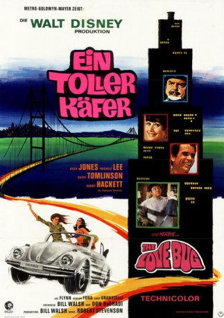
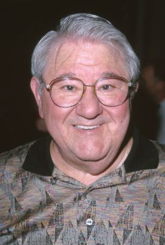
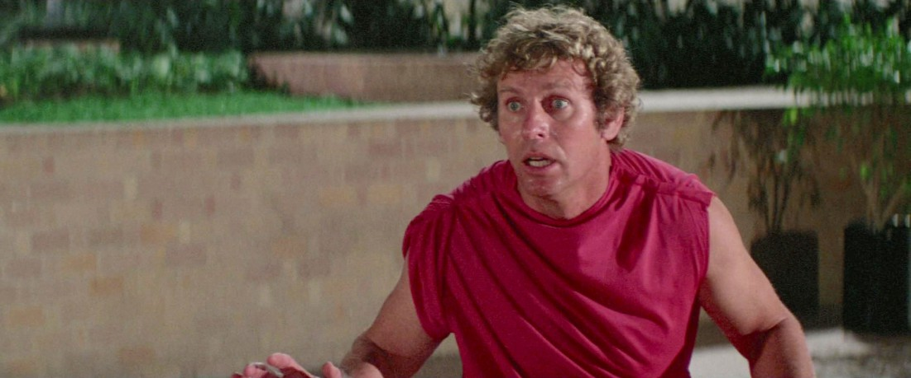

#9762 Ein Herbie 1 - Toller Käfer
Alternativ: The Love Bug
 
 IMDB-Wertung: 6.5 / 10
IMDB-Wertung: 6.5 / 10  Metascore: 0
Metascore: 0 
Herbie ist ein niedlicher VW Käfer mit eigener Persönlichkeit. Doch der fiese Rennfahrer Peter Thorndyke behandelt ihn nicht gerade zimperlich. Zum Glück wird der flotte Käfer von dem erfolglosen Rennfahrer Jim Douglas “gerettet”. Aus Dankbarkeit gibt Herbie sein Bestes und fährt gemeinsam mit Jim einen Sieg nach dem anderen ein. Thorndyke will das nicht hinnehmen und versucht, den Superkäfer mit allen Mitteln zurückzubekommen.
Jahr: 1968
Dauer: 103 Minuten
FSK: 6
Land: USA Studio: Buena Vista DISTRIBUTION CO., INC.Tonspuren: DD5.1 - ,
Untertitel:
Auflösung: 1080p (1920x1080) Größe: 4188 MB
Genre: Komödie, Familie, Sport
Regisseur: Robert Stevenson
Drehbuch: Bill Walsh, Don DaGradi, Gordon Buford
Soundtrack: George Bruns
Darsteller:
 Dean Jones als Jim
Dean Jones als Jim- Michele Lee als Carole
- David Tomlinson als Thorndyke
-  Buddy Hackett als Tennessee Steinmetz
- Joe Flynn als Havershaw
- Benson Fong als Mr. Wu
- Joe E. Ross als Detective
 Barry Kelley als Police Sgt.
Barry Kelley als Police Sgt.- Iris Adrian als Carhop
 Ned Glass als Toll Booth Attendant
Ned Glass als Toll Booth Attendant Robert Foulk als Bice
Robert Foulk als Bice- Gil Lamb als Policeman at Park
- Gary Owens als Announcer
 Pedro Gonzalez Gonzalez als Mexican Driver
Pedro Gonzalez Gonzalez als Mexican Driver Dale Van Sickel als Driver
Dale Van Sickel als Driver Regis Parton als Driver
Regis Parton als Driver- Tom Bamford als Driver
 Bill Hickman als Driver
Bill Hickman als Driver Dick Warlock als Driver
Dick Warlock als Driver Bob Hoy als Driver
Bob Hoy als Driver- Jock Mahoney als Driver
- Bud Ekins als Driver
-  Glenn R. Wilder als Driver
- Robert James als Driver
- Jesse Wayne als Driver
- Jack Perkins als Driver
 Ronnie Rondell Jr. als Driver
Ronnie Rondell Jr. als Driver Herbie als Itself
Herbie als Itself Leon Alton als Official (uncredited)
Leon Alton als Official (uncredited) Larry J. Blake als Track Timekeeper (uncredited)
Larry J. Blake als Track Timekeeper (uncredited)- John Cliff als Track Official (uncredited)
 George Holmes als Official (uncredited)
George Holmes als Official (uncredited)- Allen Jung als Gas Station Attendant (uncredited)
 Carey Loftin als Driver (uncredited)
Carey Loftin als Driver (uncredited)- Kathryn Minner als Flower Saleswoman (uncredited)
 Bing Russell als Track Starter (uncredited)
Bing Russell als Track Starter (uncredited) Eddie Smith als Race Spectator (uncredited)
Eddie Smith als Race Spectator (uncredited) Herb Vigran als Policeman on Bridge (uncredited)
Herb Vigran als Policeman on Bridge (uncredited)- Andy Granatelli als Association President
- Nicole Jaffe als Girl In Dune-buggy
- Wally Boag als Flabbergasted Driver
- Russ Caldwell als Boy Driving Dune-buggy
- Max Balchowsky als
 Peter Renaday als Policeman on Bridge
Peter Renaday als Policeman on Bridge- Brian Fong als Chinese Carrying Herbie
- Alan Fordney als
- Stan Duke als
- Chick Hearn als Announcer
- Regina Parton als Driver
- Bob Drake als Driver
Datei: X:\6-Hexalogie(A-Z)\Herbie\Herbie 1 - Toller Käfer, Ein (1968, FSK6, 1920x1080).mkv seit 27.10.2018
Festplatte: HD Collection-3(N-Z)-6(A-Z)
 Es gibt insgesamt 9 Filme in der Gruppe '6-Hexalogie(A-Z)\Herbie'
Es gibt insgesamt 9 Filme in der Gruppe '6-Hexalogie(A-Z)\Herbie'